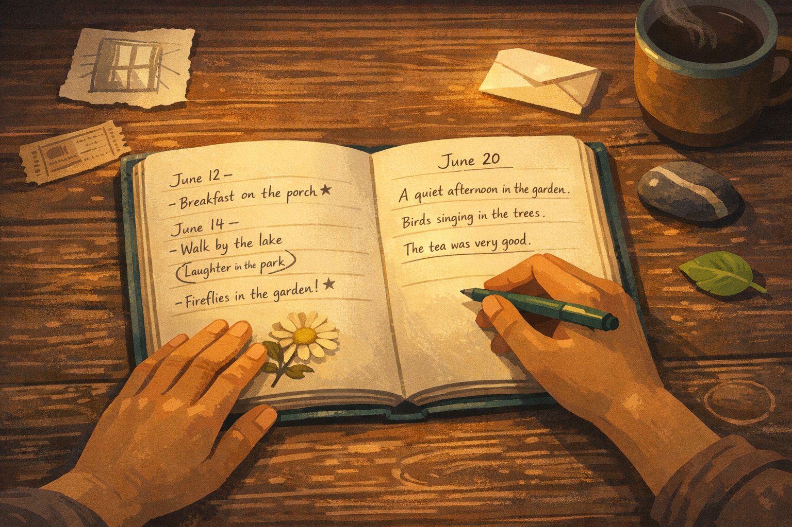

By Rustam Iuldashov
30 years lived experience with chronic migraine | Sources: 22 peer-reviewed references including American Psychologist (Fredrickson, 2001), International Journal of Applied Positive Psychology (systematic review, 9 RCTs, n=900+), Frontiers in Neurology (narrative review, 2022) | Last updated: March 23, 2026
Medical Review: This content is based on peer-reviewed research from American Psychologist, Frontiers in Neurology, The Journal of Pain, International Journal of Applied Positive Psychology, Frontiers in Psychology, Psychological Science, and Cognitive Behaviour Therapy. Rustam Iuldashov is not a medical professional. Always consult a qualified healthcare provider for health-related decisions.
📋 Key Takeaways
- Up to 67% of migraine patients report severe interictal burden — the suffering between attacks is real, measurable, and clinically significant.[1]
- Michael White’s “sparkling moments” are existing exceptions to the problem-saturated narrative — they require deliberate noticing, not creation.[5][6]
- The Reticular Activating System is a programmable attention filter; actively seeking sparkling moments recalibrates the brain’s default scan toward positive signals over time.
- Fredrickson’s broaden-and-build theory explains why even brief positive emotions compound, building resilience reserves that persist through future difficulty.[7]
- Savoring interventions in clinical populations consistently improve wellbeing and reduce negative affect; a 2024 mechanistic RCT showed savoring produces acute analgesia in chronic pain patients.[9][10]
- Gratitude writing across 25 RCTs (n=6,745) significantly improves life satisfaction and positive affect.[11]
- Micro-sparks count: scale is neurologically irrelevant — a moment of quiet tea deserves the same naming as a mountain summit.
The Good Days Disappear Twice
The migraine lifts. Pressure releases. Light stops hurting. For a few hours — maybe a few days — you are simply yourself again: laughing at something stupid, tasting your coffee, walking without calculating consequences.
And then those hours vanish.
Not because another attack comes. Because you forgot to live them.
After 30 years of migraines, I’ve noticed something troubling: bad days leave sediment. They stack into a story, layer by layer, year by year. Good days slip through your fingers like water. You barely remember them a week later. It is as if your life is written in ink when it hurts and pencil when it doesn’t.
This is not a personal failing. It is a neurological trap — and one you can deliberately dismantle.
The Prison Between Attacks
Scientists have a name for it: interictal burden — the weight carried in the spaces between pain.
The numbers are sobering. In a survey of 506 people with migraine, 67% reported severe interictal burden.[1] A large cross-sectional study of 500 patients found a direct, statistically significant inverse relationship: the greater the interictal burden, the worse the overall wellbeing.[2] A 2022 review in Frontiers in Neurology confirmed what many migraine patients already know instinctively — the period between attacks is spent in fear.[3] Fear of when the next attack will come. Fear of committing to plans. A low, constant vigilance that exhausts the nervous system long before any pain arrives.
The attacks steal the bad days. The anticipation steals the good ones.
Over time, the illness writes your entire autobiography. You stop being a person who sometimes has migraines. You become a migraineur who sometimes experiences relief. The difference is enormous — and it is exactly the difference Michael White spent his life trying to close.
What Michael White Understood
In the 1980s, Australian social worker Michael White and his New Zealand colleague David Epston developed what became narrative therapy — one of the most influential approaches to human suffering in modern psychology.[4]
White made a deceptively simple observation: we are not our problems.
People living with chronic difficulties tend to build their self-narrative around the illness. The problem becomes the author. Over time, the story crowds out everything else — until the person can barely remember who they were before the pain, or who they might be when the pain isn’t there.
His solution was externalization: treating the problem as a separate entity. You are not “a migraineur.” You have a brain that sometimes generates migraine. The condition exists — but it does not constitute you.
From this repositioning flows one of the most powerful ideas in modern psychotherapy: the unique outcome, which White also called the sparkling moment.[5]
A sparkling moment is any instance when the problem’s grip loosens. An afternoon when you laughed so hard you forgot. A quiet hour with tea and a book. A creative project you finished. A conversation so absorbing that pain wasn’t the protagonist. These moments already exist in your life. They are not invented or wished into being. They are real exceptions to the dominant narrative.
“Because no problem holds us in its grip with the same intensity over time, it is always the case that there will be moments when we are less oppressed by its challenges.”
The sparkling moments are always there. We have simply trained ourselves not to see them.
And here is the crucial point about scale: your sparkling moment does not need to be a mountain hike or a wedding anniversary. It might be a morning without nausea. A meal you actually tasted. Five minutes when the house was quiet and your shoulders dropped. The size of the moment is neurologically irrelevant. What matters is the act of naming it — because naming is encoding, and encoding is everything.
Why Your Brain Discards the Good Days
There is hard neuroscience behind this blindness.
The brain is wired for negativity bias — the evolutionary tendency to register, store, and weight negative experiences more heavily than positive ones. For our ancestors, remembering where the predator hid was more survival-critical than savoring the sunset. The bias kept them alive.[7]
For people with chronic illness, this bias is not just active — it is turbocharged. A 2022 neuroimaging study of migraine patients in the interictal period found that negative, but not neutral or positive, emotional cues activated brain regions associated with emotional processing.[3] Pain and emotional vigilance share neural territory: the posterior cingulate, caudate, amygdala, thalamus. Years of migraine have trained those networks to stay on high alert even when no attack is present.
But there is a second mechanism — less well-known and more important for what we can actually do about it.
Deep in the brainstem sits the Reticular Activating System (RAS) — a network of neurons that functions as the brain’s attention filter. The RAS determines what reaches conscious awareness out of the billions of sensory inputs competing for attention every second. It is why you suddenly notice every white Honda after you buy one, or why the word “migraine” seems to appear on every page you read.
Here is the key: the RAS is programmable. It filters for whatever you have trained it to scan for. After years of chronic pain, the filter is calibrated for threat. It amplifies danger signals and mutes positive ones.
Actively seeking sparkling moments — writing them down, naming them, returning to them — is a form of RAS recalibration. You are literally teaching the filter to catch different signals. Over time, the brain begins finding them automatically, without effort. What starts as a practice becomes a perceptual shift.
This is why Michael White’s technique is not simply a coping strategy. It is a cognitive intervention at the level of attention itself.
The Upward Spiral
Barbara Fredrickson, one of the world’s leading researchers in positive psychology, spent two decades studying what happens when positive emotions are deliberately cultivated. Her broaden-and-build theory, published in American Psychologist in 2001, offers a precise explanation for why sparkling moments matter beyond the moment itself.[7]
Negative emotions narrow attention. They produce specific action tendencies — flee, freeze, fight — that collapse the range of available thoughts and behaviors. This is appropriate in a genuine emergency. It is damaging as a permanent setting.
Positive emotions do the opposite. They broaden the momentary thought-action repertoire: joy sparks the urge to play, interest to explore, contentment to savor and integrate. This broadened state, in turn, builds enduring personal resources — cognitive, social, psychological, physical — that can be drawn on later during difficult periods.[7]
Fredrickson and Joiner demonstrated the mechanism directly: positive emotions trigger upward spirals.[14] The loop works like this:
The Upward Spiral Mechanism
A positive emotion broadens attention → broadened attention notices more positive things → more positive things generate more positive emotions → the spiral accelerates upward.
The inverse is equally familiar to anyone who lives with chronic pain: negative emotions narrow attention → narrowed attention misses positive signals → fewer positive signals generate more negative emotions → the spiral descends.
You cannot simply decide to stop the downward spiral. But you can interrupt it — by deliberately introducing a sparkling moment. Naming it. Writing it down. Staying with it long enough for the broadening to begin. One noticed cup of tea. One named good hour. That is enough to nudge the spiral.

Five Ways to Collect and Protect Sparkling Moments
1. Name them — even the micro ones
When you notice a moment of ease, connection, or quiet pleasure, say it out loud or write it down: “This is a sparkling moment.” The neurological threshold matters. An unnamed experience activates the RAS weakly; a named one anchors it in memory. A morning without nausea counts. Good tea in a quiet room counts. Scale is irrelevant to encoding.
2. Keep a sparkling moments log — separate from your symptom diary
You likely already track pain. This is the opposite: a dedicated space for good-day entries. A meta-analysis of 25 RCTs involving 6,745 participants found that regular gratitude writing produced significant improvements in life satisfaction, positive affect, and happiness compared to control conditions.[11] Three sentences per entry is enough. Date it. The archive becomes evidence — a factual counter-argument to the problem-saturated story.
3. Practice absorption — the art of full arrival
Psychologists Bryant and Veroff define absorption as temporarily blocking out distractions and fully committing attention to the present positive experience.[8] On a good day: put down your phone. Notice the light in the room. Taste what you are eating. Research in clinical populations confirms that this “savoring the moment” condition produces significantly higher positive emotions than passive experience alone.[12] You do not need more good experiences. You need to be more fully present during the ones you already have.
4. Protect good days from anticipatory sabotage
Research on interictal burden shows that many migraine patients avoid making plans — not because of current pain, but because of fear of future pain.[2] Challenge this gently. A good day is not a down payment on a bad one. Make one small, low-stakes plan: a walk, a coffee, a phone call. This creates positive anticipation — the prospective dimension of savoring — which is itself a sparkling moment in advance.[8]
5. Build an archive, not just a list
Don’t only record what happened. Write how you felt, who was there, what made it meaningful. White called this thickening — adding texture and specificity to the alternative story until it is robust enough to hold its own against the dominant one.[5] A list can be forgotten. A thickened story endures. When the next dark week comes, the archive argues back with evidence.
A note on Migraine Companion: I built the app with this tension in mind — that a migraine tracker risks becoming another instrument of the problem-saturated story. The design includes space not only for logging attacks, but for recording moments of recovery, ease, and connection. Because the good days deserve a record too.
⚠️ When to Seek Help for Interictal Burden
If fear, avoidance, or hypervigilance between attacks is significantly affecting your daily life — your ability to work, make plans, maintain relationships, or feel present — this is a clinical signal worth raising explicitly with your neurologist or a mental health professional.
Interictal burden is now recognized as a distinct, measurable dimension of migraine disability, assessed with validated tools such as the Migraine Interictal Burden Scale (MIBS-4).[2] It responds to both pharmacological prevention (CGRP monoclonal antibodies have been shown to reduce MIBS-4 scores in Phase III trials[19]) and acceptance-based psychological intervention.[13]
Sudden new neurological symptoms — including sudden severe headache (“thunderclap”), vision loss, speech difficulty, facial drooping, or limb weakness — require immediate emergency evaluation. Call your local emergency number. Do not use this article to self-diagnose.
You should not have to white-knuckle your way through the good days.
📋 Key Takeaways
- Up to 67% of migraine patients report severe interictal burden — the suffering between attacks is real, measurable, and clinically significant.[1]
- Michael White’s sparkling moments are existing exceptions to the problem-saturated narrative — they require deliberate noticing, not creation.[5][6]
- The Reticular Activating System is a programmable attention filter; actively seeking sparkling moments recalibrates the brain’s default scan toward positive signals over time.
- Fredrickson’s broaden-and-build theory explains why even brief positive emotions compound, building resilience reserves that persist through future difficulty.[7]
- Savoring interventions in clinical populations consistently improve wellbeing and reduce negative affect; a 2024 mechanistic RCT showed savoring produces acute analgesia in chronic pain patients.[9][10]
- Gratitude writing across 25 RCTs (n=6,745) significantly improves life satisfaction and positive affect.[11]
- Micro-sparks count: scale is neurologically irrelevant — a moment of quiet tea deserves the same naming as a mountain summit.
⚕️ Important Medical Disclaimer
This article is for informational and educational purposes only and does not constitute medical advice, diagnosis, or treatment. The author, Rustam Iuldashov, is not a licensed physician, neurologist, or healthcare professional. He is a patient advocate with 30 years of personal experience living with chronic migraine.
All clinical claims in this article are sourced from peer-reviewed research published in indexed medical journals. Study designs and sample sizes are noted where applicable.
Narrative therapy and positive psychology practices described in this article are complementary approaches and do not replace medical treatment for migraine. If you are experiencing significant psychological distress, interictal anxiety, or depression related to your condition, please consult a qualified mental health professional. Always work with your neurologist on any changes to your migraine management plan.
This content was last reviewed for accuracy on March 23, 2026.
References
- Lipton RB, Fanning KM, Buse DC, et al. “Identifying Natural Subgroups of Migraine Based on Comorbidity and Concomitant Condition Burden: Results of the CaMEO Study.” Headache. 2018;58(7):933–947. doi:10.1111/head.13342. Study design: Cross-sectional survey. n=506.
- Martelletti P, Schwedt TJ, Edvinsson L, et al. “Interictal burden in migraine patients at the outset of CGRP monoclonal antibody prevention.” The Journal of Headache and Pain. 2024;25:200. doi:10.1186/s10194-024-01927-8. Study design: Cross-sectional online survey. n=500.
- Buse DC, Armand CE, Charleston L, et al. “The not so hidden impact of interictal burden in migraine: A narrative review.” Frontiers in Neurology. 2022;13:1032103. doi:10.3389/fneur.2022.1032103. Study design: Narrative review.
- White M, Epston D. Narrative Means to Therapeutic Ends. New York: W.W. Norton & Company; 1990. ISBN: 9780393701036.
- Carr A. “Michael White’s narrative therapy.” Contemporary Family Therapy. 1998;20(4):485–503. doi:10.1023/A:1021680116584. Study design: Systematic clinical description.
- Innovative Resources. “Sparkling Moments.” St Luke’s Innovative Resources, Bendigo; 2025. Available at: innovativeresources.org/sparkling-moments.
- Fredrickson BL. “The role of positive emotions in positive psychology: The broaden-and-build theory of positive emotions.” American Psychologist. 2001;56(3):218–226. doi:10.1037/0003-066X.56.3.218. Study design: Theoretical review with empirical support.
- Bryant FB, Veroff J. Savoring: A New Model of Positive Experience. Mahwah, NJ: Lawrence Erlbaum Associates; 2007. ISBN: 9780805851601.
- Cullen K, Murphy M, Di Blasi Z, Bryant FB. “The effectiveness of savouring interventions in adult clinical populations: A systematic review.” International Journal of Applied Positive Psychology. 2024. doi:10.1007/s41042-024-00182-1. Study design: Systematic review of RCTs. n=900+ (9 studies, 7 countries).
- Garland EL, Hanley AW, Nakamura Y, et al. “Effects of Savoring Meditation on Positive Emotions and Pain-Related Brain Function: A Mechanistic Randomized Controlled Trial in People With Rheumatoid Arthritis.” The Journal of Pain. 2024. doi:10.1016/j.jpain.2024.104635. Study design: Pilot mechanistic RCT.
- Dickens LR. “Using gratitude to promote positive change: A meta-analysis of gratitude interventions.” International Journal of Applied Positive Psychology. 2023. doi:10.1007/s41042-023-00086-6. Study design: Meta-analysis of RCTs. n=6,745 (25 RCTs).
- Kahrilas IJ, Smith JL, Silton RL, Bryant FB. “Savoring interventions increase positive emotions after a social-evaluative hassle.” Frontiers in Psychology. 2022;13:791040. doi:10.3389/fpsyg.2022.791040. Study design: Experimental mixed-subject RCT.
- Gervind E, Bagge AL, Nager A, et al. “‘I am now on speaking terms with my migraine monster’ — patient experiences in acceptance-based iCBT for migraine: a randomized controlled pilot study.” Cognitive Behaviour Therapy. 2024. doi:10.1080/16506073.2024.2408384. Study design: Mixed-methods RCT pilot. n=29.
- Fredrickson BL, Joiner T. “Positive emotions trigger upward spirals toward emotional well-being.” Psychological Science. 2002;13(2):172–175. doi:10.1111/1467-9280.00431. Study design: Prospective longitudinal.
- Tugade MM, Fredrickson BL. “Resilient individuals use positive emotions to bounce back from negative emotional experiences.” Journal of Personality and Social Psychology. 2004;86(2):320–333. doi:10.1037/0022-3514.86.2.320. Study design: Prospective experimental.
- Garland EL, Fredrickson B, Kring AM, et al. “Upward spirals of positive emotions counter downward spirals of negativity: insights from the broaden-and-build theory and affective neuroscience.” Clinical Psychology Review. 2010;30(7):849–864. doi:10.1016/j.cpr.2010.03.002. Study design: Theoretical and empirical review.
- Cullen K, Murphy M, Di Blasi Z, Bryant FB. “The effectiveness of savouring interventions on well-being in adult clinical populations: A protocol for a systematic review.” PLOS ONE. 2024;19(4):e0302014. doi:10.1371/journal.pone.0302014. Study design: Systematic review protocol.
- Scalcon A, Zucchelli MM, Raineri M, et al. “Integrating Immersive Virtual Reality with Savoring to Promote the Well-Being of Patients with Chronic Respiratory Diseases: Pilot RCT.” JMIR. 2025. doi:10.2196/67395. Study design: Pilot RCT. n=45.
- Buse DC, Lipton RB, Hallstrom LP, et al. “Changes in migraine interictal burden following treatment with galcanezumab.” Headache. 2023;63:1232–1244. doi:10.1111/head.14460. Study design: Phase III RCT.
- Almarzooqi S, Chilcot J, McCracken LM. “The role of psychological flexibility in migraine headache impact and depression.” Journal of Contextual Behavioral Science. 2017;6(2):239–244. doi:10.1016/j.jcbs.2017.03.004. Study design: Cross-sectional online survey. n=199.
- Fredrickson BL. “The broaden-and-build theory of positive emotions.” Philosophical Transactions of the Royal Society B. 2004;359:1367–1377. doi:10.1098/rstb.2004.1512. Study design: Theoretical review with empirical evidence.
- Andrasik F, Grazzi L, D’Amico D, et al. “Mindfulness and headache: A ‘new’ old treatment, with new findings.” Cephalalgia. 2016;36(12):1192–1205. doi:10.1177/0333102416667023. Study design: Review with RCT evidence.

How We Create Content
- Peer-reviewed sources only. This article draws from American Psychologist, Frontiers in Neurology, The Journal of Pain, International Journal of Applied Positive Psychology, Frontiers in Psychology, Psychological Science, Journal of Personality and Social Psychology, Cognitive Behaviour Therapy, Clinical Psychology Review, Cephalalgia, and PLOS ONE.
- Study transparency. Study design and sample sizes noted for all clinical references.
- Source verification. All claims backed by numbered references with DOI links.
- Experience + Science. 30 years personal migraine experience combined with peer-reviewed evidence and established frameworks (Michael White, David Epston, Barbara Fredrickson, Fred Bryant, Eric Garland).
- Regular updates. Articles reviewed when significant new research emerges.
- No conflicts of interest. No funding from pharmaceutical companies, therapy practices, or supplement manufacturers.
Your Good Days Deserve a Record Too
Migraine Companion was built on narrative therapy principles — the belief that you are not your condition. Log your attacks, yes — but also collect your sparkling moments. Start re-authoring your story today.
Last reviewed: March 2026
Next scheduled review: September 2026